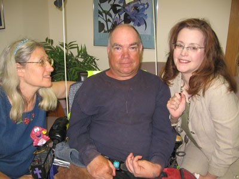

Guardianship Ministry
Mission
For 25 years, we have faithfully provided loving support in legal guardianship to people with Intellectual or Developmental Disabilities.
Guardianship in Action - We serve our clients by:
- Personally visiting each individual to build relationship and trust, and to observe the client and their care
- Involving individuals in the community, according to the client's needs and interests
- Advocating for the most appropriate housing, medical care and activities of daily living
- Sponsoring events to enhance community inclusion
- Nurturing family relationships
- Managing assets
- Celebrating birthdays and Christmas
Applications for Bridge Disability Ministries Guardianship Agency services are being accepted for private pay clients. For information, please contact Nadia.